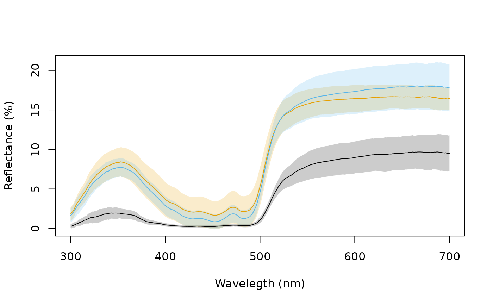
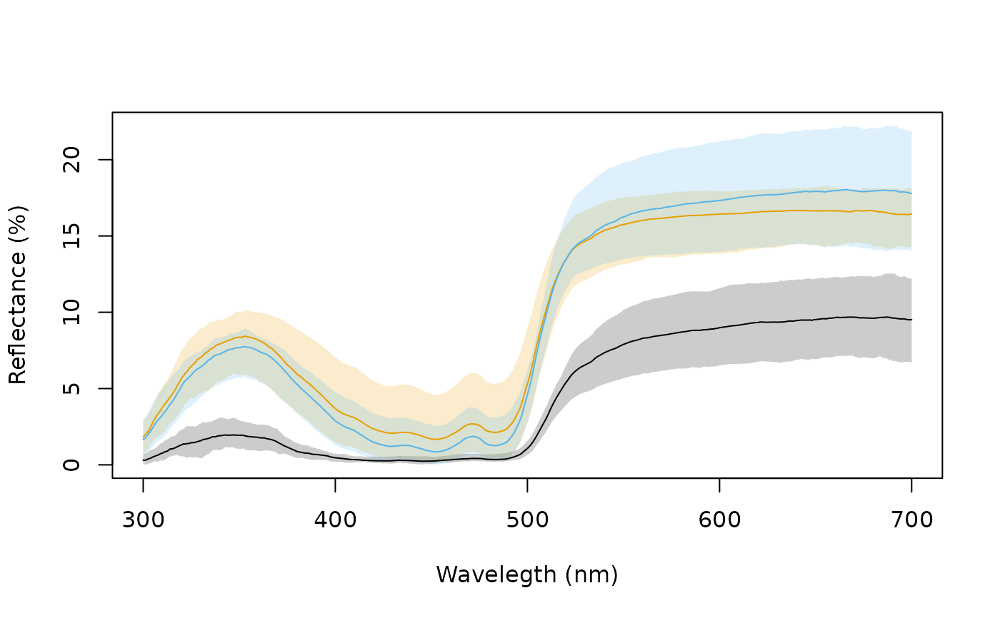
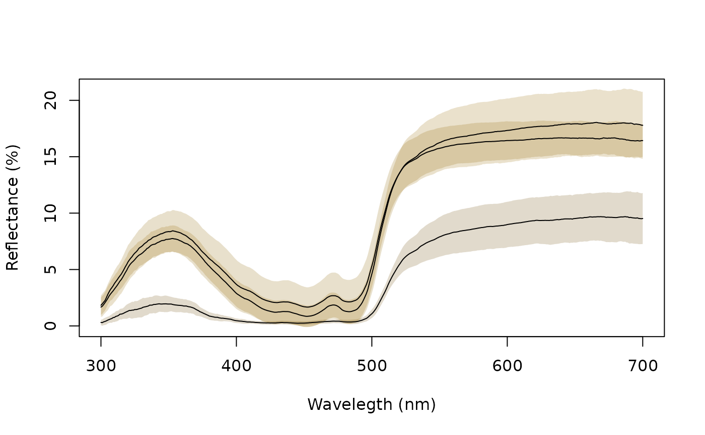
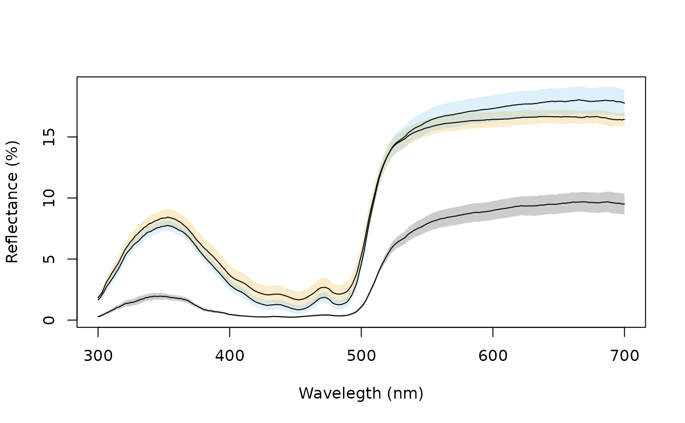

Combines and plots spectra (by taking the average and the standard deviation, for example) according to an index or a vector of identities.
aggplot(
rspecdata,
by = NULL,
FUN.center = mean,
FUN.error = sd,
lcol = NULL,
shadecol = NULL,
alpha = 0.2,
legend = FALSE,
...
)(required) a data frame, possibly of class rspec, which
contains a column containing a wavelength range, named 'wl', and spectra
data in remaining columns.
(required) either a single value specifying the range of spectra
within the data frame to be combined (for example, by = 3 indicates the
function will be applied to groups of 3 consecutive columns in the spectra
data frame); a vector containing identifications for the columns in the
spectra data frame (in which case the function will be applied to each
group of spectra sharing the same identification); or a list of vectors,
e.g., by = list(sex, species).
the function to be applied to the groups of spectra,
calculating a measure of central tendency (defaults to base::mean()).
the function to be applied to the groups of spectra,
calculating a measure of variation (defaults to stats::sd()).
colour of plotted lines indicating central tendency.
colour of shaded areas indicating variance measure.
transparency of the shaded areas.
automatically add a legend.
additional graphical parameters to be passed to plot.
Plot containing the lines and shaded areas of the groups of spectra.
Montgomerie R (2006) Analyzing colors. In: Hill G, McGraw K (eds) Bird coloration. Harvard University Press, Cambridge, pp 90-147.
# Load reflectance data
data(sicalis)
# Create grouping variable based on spec names
bysic <- gsub("^ind[0-9].", "", names(sicalis)[-1])
# Plot using various error functions and options
aggplot(sicalis, bysic)

aggplot(sicalis, bysic, FUN.error = function(x) quantile(x, c(0.0275, 0.975)))

aggplot(sicalis, bysic, shadecol = spec2rgb(sicalis), lcol = 1)

aggplot(sicalis, bysic, lcol = 1, FUN.error = function(x) sd(x) / sqrt(length(x)))
